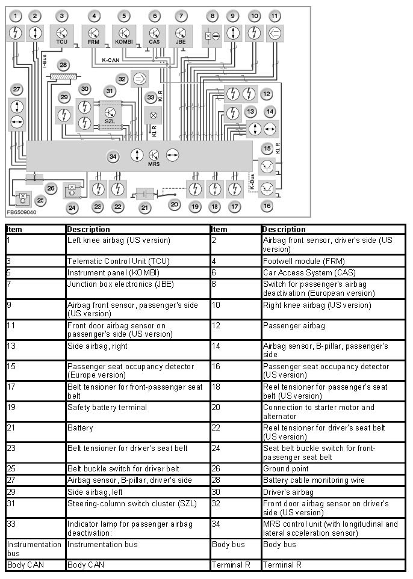
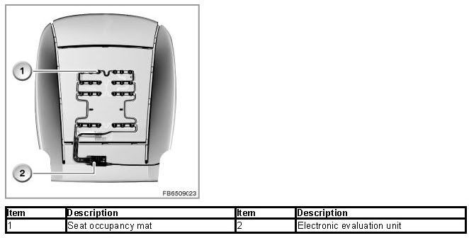
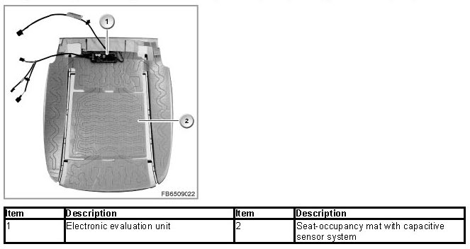

Multiple Restraint System
Multiple Restraint System
Multiple restraint system
The multiple restraint system (MRS) of the 7th generation is a continuous enhancement of the multiple restraint systems in BMW vehicles.
The MRS has the following tasks:
- Detecting an accident situation that is critical for the occupants
- Activating the necessary restraint systems (selectively depending on the severity of the accident and accident type)
Brief component description
The following components are described for the multiple restraint system (MRS):
MRS control unit
The MRS control unit is bolted in a central position in the vehicle onto the gearbox tunnel. All inflator assemblies and sensors are connected directly to the MRS control unit. The MRS control unit evaluates the data from the sensors. In the event of a collision, the MRS control unit decides whether it is required to trigger the various restraint systems and which ignition circuits have to be triggered.
Two acceleration sensors are fitted in the MRS control unit. The longitudinal acceleration sensor detects a frontal or rear-end collision. The lateral acceleration sensor detects a side-on collision.
An ignition capacitor is fitted in the MRS control unit. If the power supply is interrupted in a collision, the ignition capacitor serves as an energy reserve for the MRS control unit.

Front door airbag sensor on driver's side and front door airbag sensor on passenger's side (US version)
The 2 airbag sensors are pressure sensors. The airbag sensors are fitted in each of the inner door panels. The airbag sensor consists of the following components:
- Pressure sensor for detection of a side-on crash
- Electronic module for signal processing and for data interchange
If the door outer skin is pressed inwards in a side-on collision, the door interior is reduced in size. This increases the pressure in the door interior. This increase in pressure is measured by the pressure sensor. The measured pressure values are digitized in the electronic module. The electronic module sends a message to the MRS control unit (cyclical message transfer). The message is evaluated in the MRS control unit.
Airbag sensor in the B-pillar driver's side and passenger's side
Airbag sensors are fitted on the left-hand and right-hand B-pillars at the bottom in the area of the sill. Each airbag sensor contains a lateral acceleration sensor and a longitudinal acceleration sensor. The longitudinal acceleration sensor detects a frontal or rear-end collision. The lateral acceleration sensor detects a side-on collision.
Front airbag sensor on driver's side and passenger's side (US version)
Front airbag sensors are bolted onto the left-hand and right-hand brace of the front panel. The 2 front airbag sensors are longitudinal acceleration sensors. The sensors detect frontal or rear-end collisions.
Belt buckle switch
The belt buckle switches indicate whether the seat belts have been fastened or not. The belt buckle switches are supplied with voltage by the MRS control unit. The current consumption of the switch is the signal for the switch position (seat belt fastened or not fastened). The belt buckle switches are monitored permanently as of terminal R On.
The signal from the seat belt buckle switch decides whether or not the seat belt tensioner is actuated when needed. If the front passenger's seat is detected as occupied via the signals from the seat occupancy mat without the belt buckle switch sending a signal, a seat belt warning is issued. Whether or not the belt tensioner on the front passenger side is activated depends on the status signal of the seat belt buckle switch (seat belt fastened or not fastened). If the seat belt is inserted in the belt buckle switch, the seatbelt tensioner is also triggered.
Front passenger seat occupancy detection via seat-occupancy mat with pressure sensors (European version)
The passenger seat occupancy detection detects whether the seat is occupied or not. The seat occupancy mat consists of conductors and pressure sensors. The conductor tracks are connected to the electronic evaluation unit.

When a weight is placed on the seat, resistance in the seat occupancy mat changes. The seat occupancy electronics evaluate this change in resistance ("seat occupied" or "seat unoccupied" status).
The seat is recognized as being not occupied up to a weight of approx. 12 kg. The seat occupancy detection function, however, also depends on the type of seat. For example: The material tension in a leather seat or a taut sports seat is already interpreted as pressure on the sensors. In such cases, a weight below 12 kg can trigger the "seat occupied" condition.
The signal is sent across a direct line to the MRS control unit. The signal is only required for the seat belt warning. e. g.a visual seat belt reminder appears if the front passenger seat is recognized as being occupied and the seat belt buckle switch has not sent a signal.
Switch for passenger's airbag deactivation (European version)
In the switch position "OFF", the following airbags on the passenger's side are not inflated: Passenger's airbag and side airbag. The indicator lamp for passenger's airbag deactivation (front-passenger airbag OFF lamp) lights up. The switch is operated using the key integrated into the remote control.
Front passenger seat occupancy detection via seat-occupancy mat with capacitive sensor system (US version)
According to the regulations of the NHTSA (National Highway Traffic Safety Administration), a small child in the child restraint system specifically designed for the purpose on the front passenger's seat must be detected automatically. If the passenger's seat is detected as "occupied" with a child restraint system specifically designed for the purpose, the MRS control unit automatically disables the airbags on the passenger's side (passenger's airbag, side airbag, knee airbag). The indicator lamp for front-passenger airbag deactivation lights up.

The passenger seat occupancy detection consists of a seat-occupancy mat with a capacitive sensor system. The occupancy of the front passenger seat is detected by measuring the resistance of the human body.
Classification of the occupancy status is based on the evaluation of the capacitive resistance. The electronic evaluation unit picks up the change and determines the corresponding status.
The airbags on the front-passenger side are deactivated automatically when a small child is detected in the child restraint system provided for this purpose. The indicator lamp for front-passenger airbag deactivation lights up. If person of adequate size sitting correctly is detected, the airbags on the passenger's side are activated. The indicator lamp for the passenger's airbag deactivation does not light up.
The passenger's airbag could deactivate with a youth or adult seated in certain positions (indicator lamp for passenger airbag deactivation comes on). In these cases, the seat position must be changed until the indicator lamp for the front passenger's airbag deactivation goes out (airbags on the passenger's side are activated). The electronic evaluation unit sends the status information in cycles to the MRS control unit. Possible fault states are stored in the fault code memory of the MRS control unit.
If the seat occupancy mat is defective, the airbags on the passenger's side are automatically disabled (passenger's airbag, knee airbag, side airbag). The indicator lamp for front-passenger airbag deactivation lights up.
If there is a breakage in the heating wire of the seat heating, the seat-occupancy mat self-diagnosis makes a corresponding fault entry in the MRS control unit.
CAS: Car access system
The CAS control unit delivers input signals with regard to terminal voltage (e.g. terminal R On). The MRS control unit is supplied with voltage by the CAS control unit (as of terminal R).
DME or DDE: Digital Motor Electronics and/or Digital Diesel Electronics
When an airbag triggers, the DME or DDE switches off the electric fuel pump. The DME or DDE receives a message from the MRS control unit on the CAN bus.
JBE: Junction Box electronics
The JBE handles activation of the central-locking drives. In the event of an accident with the corresponding severity, the central-locking system is unlocked.
FRM: Footwell module
The footwell module controls the interior lighting and exterior lighting. In the event of an accident with the corresponding severity, the interior lights and hazard warning lights switch on automatically.
KOMBI: Instrument panel control unit
The instrument cluster shows the visual seat belt warning and issues an acoustic seat belt warning. The MRS control unit activates the seat belt warning by means of a Check Control message. The instrument panel receives the status as of terminal R On from the MRS control unit. With the corresponding status, a visual and acoustic seat belt warning is issued as of terminal 15 On. The instrument cluster also contains the airbag warning lamp. The instrument cluster is connected via the K-CAN with the MRS control unit.
TCU: Telematics control unit
With the corresponding accident severity, the MRS control unit sends a signal to the Telematic Control Unit via the instrumentation bus (I-bus). The Telematic Control Unit automatically initiates an emergency call which also contains the location of the vehicle.
Driver's and front passenger's airbag
The driver's and passenger's airbags reduce the risk of head injuries or injuries in the area of the occupants' chest in a frontal collision. The driver airbag is located under the centre pad on the steering wheel. The front passenger's airbag is built into the dashboard above the glove box.
Side airbag
The side airbags reduce the risk of injuries to the occupants in the lap or torso area in the event of a side-on collision. The side airbag are fitted in the armrest side sections of the front seats.
Knee airbag (US version)
When triggered, the knee airbag provides support for the knee if the front passenger is not wearing a seat belt. This initiates controlled forward displacement of the upper body. The upper body is cushioned by the respective airbag (driver's or passenger's airbag).
Seatbelt tensioners for driver belt and passenger belt
As a rule, the seat belt does not fully tighten around the body. The so-called "belt slack" of the seat belt ensures that the occupants can move comfortably to an adequate degree. In the event of a collision, the pyrotechnic seatbelt tensioner pulls the belt buckle a number of centimeters downwards (bear the national version in mind), thus pulling the seat belt tight into the occupant's shoulder and pelvis.
Reel tensioners for driver's seat belt and passenger belt (US version)
The effect of the reel tensioners is that in the event of a collision the occupants' shoulder region is fixed more strongly on the seat. The reel tensioner is connected to the reel mechanism. When the reel tensioner triggers, the seat belt is reeled in, pulling it taut.
Seat belt force limiter
The seat belts are the primary restraint system for all occupants. To minimize the force in the chest area of the occupants in the event of a severe frontal collision, the front seat belts are equipped as series standard with belt tension limiters. The mechanical belt tension limiters ensure that the seatbelt strap has a defined flexibility as of a certain force. The risk of injury due to belt forces exerted on the body is reduced.
Safety battery terminal
Depending on the severity of the accident, the safety battery terminal disconnects the starter motor and the alternator from the battery. This prevents the risk of electrical short-circuits in a serious accident.
Battery cable monitoring wire
Petrol engine vehicles: The battery cable must be monitored on vehicles where the battery cable is installed on the underbody parallel to the fuel line. The battery cable is monitored by the MRS control unit.
Depending on the type of vehicle, the battery cable is made of copper or aluminium and insulated with plastic. The plastic insulation is then covered with a low-impedance metal mesh. This metal mesh forms the monitoring line. The battery cable is then covered with a second insulation layer made from plastic. This is the external insulation layer.
A connection wire is provided at both ends of the monitoring wire. Both connection leads are connected MRS control unit. The MRS control unit triggers the safety battery terminal in the case of a short-circuit.
Airbag control lamp
The airbag warning lamp indicates the proper functioning of the multiple restraint system. The airbag warning lamp in the instrument panel is activated by the MRS control unit via the K-CAN.
Seat belt warning lamp
The seat belt warning lamp is the visual seat belt warning. The visual seat belt warning tells the occupants to fasten their seat belts. The visual seat belt warning is started as of terminal 15 On (bear national version in mind).
The visual seat belt warning is displayed as follows:
- The seat belt warning lamp lights up in the instrument panel
- Check Control message in the instrument panel
Indicator lamp for passenger airbag deactivation:
If the indicator lamp for passenger airbag deactivation (passenger's airbag off-lamp) lights up, the following airbags on the passenger's side are disabled: passenger's airbag, side airbag, knee airbag.
Fuel pump
Depending on the severity of the accident, the flow of fuel is also interrupted. The DME or DDE switches the electric fuel pump off.
System functions
The following system functions are described for the multiple restraint system:
- Self test
- Collision detection
- Activating the safety system
- Message to other control units
- Visual and audible seat belt warning
Self test
In addition to all inputs and outputs, the MRS control unit also monitors the internal components (self-test). Possible faults are stored in the MRS control unit. In the event of a system error or a fault in a component, the airbag warning lamp lights up.
The MRS control unit starts a self-test after the ignition has been switched on. During this time, the airbag warning lamp lights up (approx. 3 to 5 seconds). When the safety system is functional, the airbag warning lamp goes out. If the instrument panel receives no CAN message from the MRS control unit, the airbag warning lamp lights up. If the MRS control unit has already detected a current or stored fault during the self-test or while the vehicle is being driven, the airbag warning lamp remains switched on.
If a fault is detected in the safety system, the operability of the safety system is partially maintained under the following conditions:
- If a fault is detected in a circuit of the safety system, only the function of the circuit concerned is disabled. The other airbag and seatbelt tensioners remain functional.
- In the event of a fault in the circuit of the airbag warning lamp, the lamp does not light up in the selftest. With the precondition that no other fault is present, the safety system remains functional without restriction.
In the event of an internal malfunction or a fault in the power supply in the MRS control unit, the entire safety system is disabled (airbag indicator and seat belt warning lamps light up, Check Control message in the instrument panel).
Collision detection
The MRS control unit picks up every collision within an angular range of 360°. The direction and severity of a collision are picked up by acceleration sensors in the MRS control unit and by external acceleration sensors. External acceleration sensors:
- Front airbag sensor for driver and front airbag sensor for passenger (bear the national version in mind)
- Front door airbag sensor on driver's side and front door airbag sensor on passenger's side (bear the national version in mind)
- Airbag sensor on driver's side B-pillar and passenger's side B-pillar
The MRS control unit processes all the acceleration data. This determines the direction of a collision and the severity of the accident.
Activating the safety system
Comprehensive tests are used to set trigger thresholds for all possible types of accident. This results in different trigger thresholds for activation of the various restraint systems (airbags, seatbelt tensioners, etc.). The restraint systems are only triggered if 2 independent sensors simultaneously detect the corresponding threshold values. The MRS control unit evaluates the acceleration data of the sensors, thus determining the direction and severity of a collision. In the event of a collision, the MRS control unit decides whether it is required to trigger the system and which gas generators (seatbelt tensioners, airbags, etc.) have to be triggered. For example, the seatbelt tensioners have a lower trigger threshold than the front airbags. This means that, depending on the severity of the accident, only the seatbelt tensioners are triggered by the MRS control unit.
Message to other control units
If the restraint systems trigger, the MRS control unit sends a message to other equipment attached to the bus. The following functions are performed by the relevant control units depending on the severity of the accident:
- Switching off the electric fuel pump (via the Digital Motor Electronics control unit)
- Switching off the alternator (via the Digital Motor Electronics control unit)
- Opening the central-locking system (via the junction box electronics)
- Switching on the interior lights (via the footwell module)
- Switching on the hazard warning lights (via the footwell module)
Visual and acoustic seat belt warning for driver belt and passenger belt
For the seat belt warning, the signals of the 2 belt buckle switches (driver belt, passenger belt) are monitored separately. If the seat occupancy detection indicates that the passenger's seat is occupied, the passenger belt must also be inserted in the belt buckle. The seat belt warning then goes out.
The following situations are taken into account for output of a seat belt warning:
- Front seat belt not fastened and distance driven less than 200 m
With a driven distance below 200 m, only a visual seat belt warning is displayed (the seat belt warning lamp lights up). The vehicle can e.g. be driven out of the garage without triggering an acoustic seat belt warning.
- Front seat belt not fastened and distance driven more than 200 m
The seat belt warning lamp lights up (visual seat belt warning). The acoustic seat belt warning is switched on for approx. 90 seconds. Once the seat belt has been fastened, the visual seat belt warning disappears. The acoustic seat belt warning is switched off. If the seat belt has not been fastened by the end of the audible seat belt warning, the seat belt indicator lamp lights up.
- Unfastening the front seat belt when the vehicle is in motion
If a belt buckle is opened while the vehicle is being driven, the seat belt warning lamp lights up immediately and a short acoustic signal sounds. After approx. 15 seconds, an additional acoustic seat belt warning is switched on for approx. 90 seconds. Once the seat belt has been fastened, the visual seat belt warning disappears. The acoustic seat belt warning is switched off. If the seat belt has not been fastened by the end of the audible seat belt warning, the seat belt indicator lamp lights up.
Notes for Service department
General Information
The following general data is provided for servicing the MRS:
Disconnecting the battery terminals
NB: After disconnecting the battery terminals, wait 1 minute before starting work on the MRS safety system.
After disconnecting the battery terminals, 1 minute must be waited before starting work on the MRS safety system. The waiting period ensures that the capacitors with the energy reserve of the system are completely discharged.
This prevents inadvertent triggering of airbags or seatbelt tensioners.
Fitting approved seat covers
NB: only fit approved seat covers.
Do not fit seat covers, cushions or other objects on the front seats that have not been specially approved for seats with integrated side airbags. Do not hang articles of clothing, e.g. jackets, over the front seat backrests. This severely impairs or disables the airbag function.
Diagnosis instructions
NOTE: After 3 crash signals with triggering of the safety system, replace the MRS control unit.
The MRS control unit stores data in a non-erasable memory after a triggering of the safety system. The data is relevant to accident research (no access for service). After 3 crash signals, the data memory is full. The airbag warning lamp lights up. The MRS control unit must be replaced.
Notes on encoding/programming
NOTE: Deactivating the acoustic seat belt warning
The acoustic seat-belt warning can be deactivated by encoding. This does not affect a legally prescribed seat belt warning.
NOTE: Coding the MRS control unit
After replacement, the MRS control unit must be coded.
National versions
National version US
two-stage driver's airbag and passenger's airbag
The driver's and passenger's airbag are each equipped with a 2-stage inflator assembly. Depending on the severity of the accident, the two stages of the airbag are triggered with a delay. This enables adaptation of the restraint function of the airbag to the severity of each accident, thus minimising the additional load on the occupants during the unfolding phase of the airbag.
Visual and audible seat belt warning
As of terminal 15 On, a visual and acoustic seat belt warning is issued. The seat belt warning has a time limit (6 seconds).
The further progression of the seat belt warning is identical to that of the seat belt warning in Europe vehicles.
Enable seat occupancy mat
Following replacement of the seat-occupancy mat with capacitive sensor system, the seat-occupancy mat must be enabled. A service function is available for initialization.
National version Japan / Gulf states
Visual and audible seat belt warning
As of terminal 15 On, a visual and acoustic seat belt warning is issued. The seat belt warning has a time limit (6 seconds).
No liability can be accepted for printing or other errors. Subject to changes of a technical nature